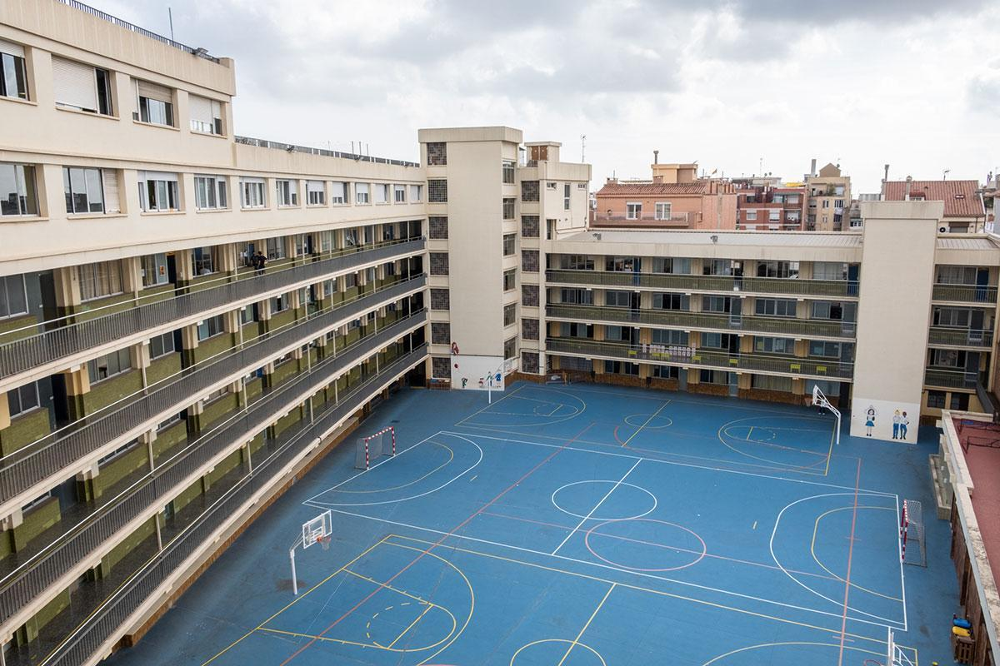
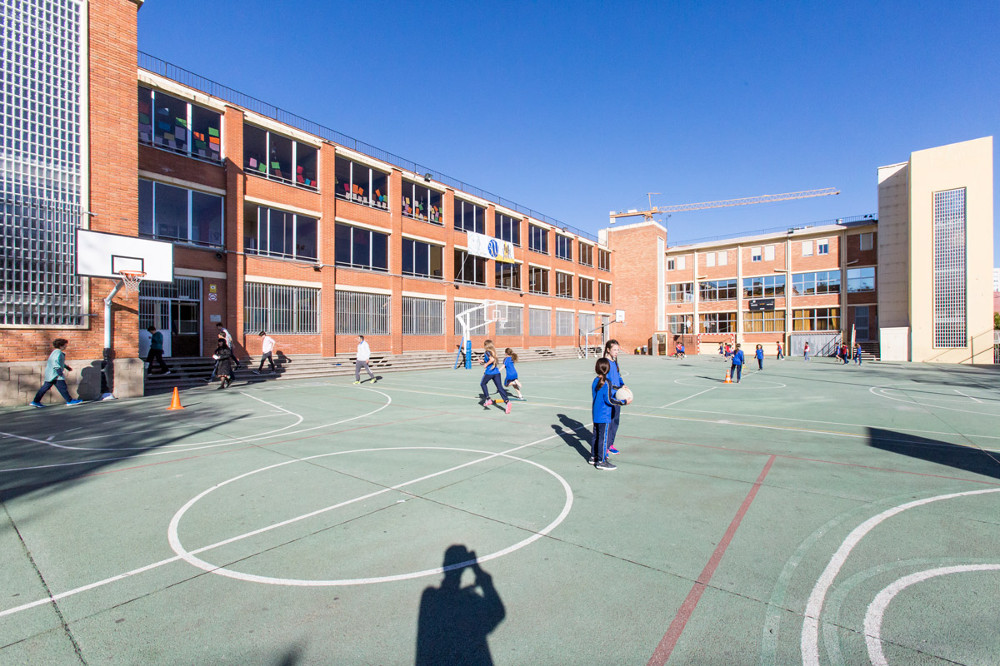

FORMACIÓN ACADEMICA
- Ciclo Grado superior de DAM (2024- en proceso) La Salle Gracia - Estoy aprendiendo a programar aplicaciones multiplataforma con lenguajes como Java, Python y HTML. También me estoy especializando en bases de datos, interfaces gráficas y desarrollo de videojuegos. El ciclo incluye formación en metodologías ágiles y buenas prácticas de programación para crear soluciones innovadoras y eficientes.  - Titulo de Bachillerato (2021-2024) La Salle Horta - Aprendí los fundamentos de economía, empresa y matemáticas aplicadas al ámbito social. Desarrollé habilidades de análisis crítico, resolución de problemas y trabajo en equipo. Además, completé asignaturas como historia y geografía, que ampliaron mi visión sobre las dinámicas sociales y culturales del mundo actual. 